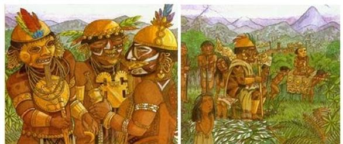
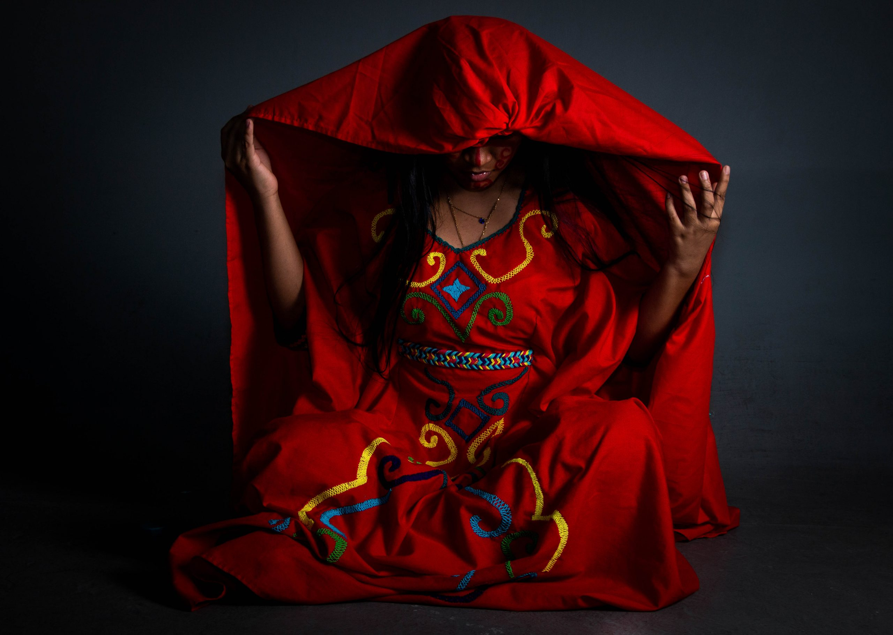

Periodo Prehistórico
Antes de la colonización española, la región estaba habitada por grupos indígenas que formaban parte de la gran diversidad cultural de Colombia. Las comunidades que ocupaban las áreas de Tobia y sus alrededores pertenecían principalmente a los panches, un grupo étnico conocido por su resistencia y guerreros.
Economia Y Subsistencia
Los pueblos indígenas de la región practicaban una economía basada en la agricultura, la caza y la recolección. Cultivaban productos como maíz, yuca, frijol y otros cultivos alimentarios. La agricultura era complementada por la caza de animales y la recolección de frutos silvestres.
Creencias Y Rituales
Los pueblos indígenas en esta región tenían creencias religiosas que incluían la adoración de deidades relacionadas con la naturaleza y los ciclos agrícolas. Los rituales y ceremonias eran comunes, y la música y la danza desempeñaban un papel importante en sus tradiciones culturales.
Interaccion Con Otros Grupos

La ubicación de Tobia en el altiplano cundiboyacense facilitaba el comercio y la interacción con otras culturas, incluidos los muiscas, que eran una de las culturas más influyentes de la región. Sin embargo, los panches se caracterizaban por su resistencia y sus conflictos con los muiscas, lo que los hacía una comunidad notable en la historia precolombina.
El período prehistórico en Tobia es parte de la rica historia de las comunidades indígenas que habitaban el altiplano cundiboyacense. Aunque no se dispone de muchos detalles específicos sobre Tobia, su ubicación y la influencia de los grupos indígenas de la región son fundamentales para entender el contexto cultural y social que precedió a la llegada de los conquistadores españoles.